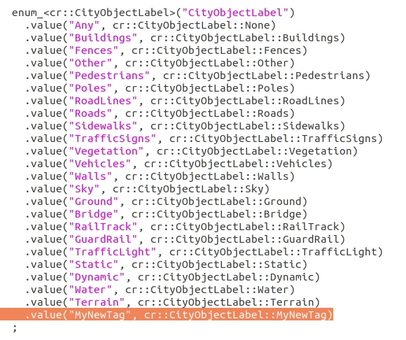

Create semantic tags
Learn how to define customized tags for semantic segmentation. These can additionally be added to carla.CityObjectLabel to filter the bounding boxes that carla.World retrieves.
Create a new semantic tag
1. Create the tag ID
Open ObjectLabel.h in LibCarla/source/carla/rpc. Add your new tag by the end of the enum using the same formatting as the rest.

Note
Tags do not have to appear in order. However, it is good practice to list them in order.
2. Create the UE folder for assets
Open the Unreal Engine Editor and go to Carla/Static. Create a new folder named as your tag.

Note
The UE folder and the tag do not necessarily have to be named the same. However, it is good practice to do so.
3. Create two-way correspondence between UE and the code tag
3.1. Open Tagger.cpp in Unreal/CarlaUE4/Plugins/Carla/Source/Carla/Game. Go to GetLabelByFolderName Add the your tag by the end of the list. The string being compared is the name of the UE folder used in 2., so use the exact same name here.

3.2. Go to GetTagAsString in the same Tagger.cpp. Add the new tag by the end of the switch.

4. Define a color code
Open CityScapesPalette.h in LibCarla/source/carla/image. Add the color code of your new tag by the end of the array.

Warning
The position in the array must correspond with the tag ID, in this case, 23u.
5. Add the tagged meshes
The new semantic tag is ready to be used. Only the meshes stored inside the UE folder of a tag are tagged as such. Move or import the corresponding meshes to the new folder, in order for the to be tagged properly.
Add a tag to carla.CityObjectLabel
This step is not directly related with semantic segmentation. However, these tags can be used to filter the bounding box query in carla.World. In order to do this, the tag must be added to the carla.CityObjectLabel enum in the PythonAPI.
Open World.cpp in carla/PythonAPI/carla/source/libcarla and add the new tag by the end of the enum.

Read the F.A.Q. page or post in the CARLA forum for any issues, doubts or suggestions.
What's next?